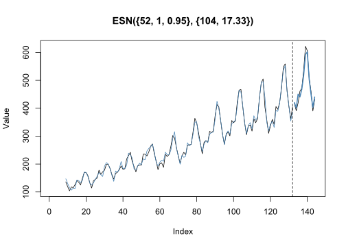
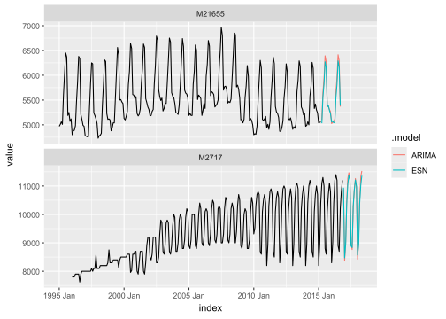

The echos package provides a comprehensive set of functions and methods for modeling and forecasting univariate time series using Echo State Networks (ESNs). It offers two alternative approaches:
-
Base R interface: Functions for modeling and forecasting time series using
numericvectors, allowing for straightforward integration with existing R workflows. -
Tidy interface: A seamless integration with the
fableframework based ontsibble, enabling tidy time series forecasting and model evaluation. This interface leverages thefabletoolspackage, providing a consistent and streamlined workflow for model development, evaluation, and visualization.
The package features a lightweight implementation that enables fast and fully automatic model training and forecasting using ESNs. You can quickly and easily build accurate ESN models without requiring extensive hyperparameter tuning or manual configuration.
Installation
You can install the development version from GitHub with:
# install.packages("devtools")
devtools::install_github("ahaeusser/echos")Base R
library(echos)
# Forecast horizon
n_ahead <- 12 # forecast horizon
# Number of observations
n_obs <- length(AirPassengers)
# Number of observations for training
n_train <- n_obs - n_ahead
# Prepare train and test data
xtrain <- AirPassengers[(1:n_train)]
xtest <- AirPassengers[((n_train+1):n_obs)]
# Train and forecast ESN model
xmodel <- train_esn(y = xtrain)
xfcst <- forecast_esn(xmodel, n_ahead = n_ahead)
# Plot result
plot(xfcst, test = xtest)
Tidy R
library(echos)
library(tidyverse)
library(tsibble)
library(fable)
# Prepare train data
train_frame <- m4_data %>%
filter(series %in% c("M21655", "M2717"))
# Train and forecast ESN model
train_frame %>%
model(
"ESN" = ESN(value),
"ARIMA" = ARIMA(value)
) %>%
forecast(h = 18) %>%
autoplot(train_frame, level = NULL)